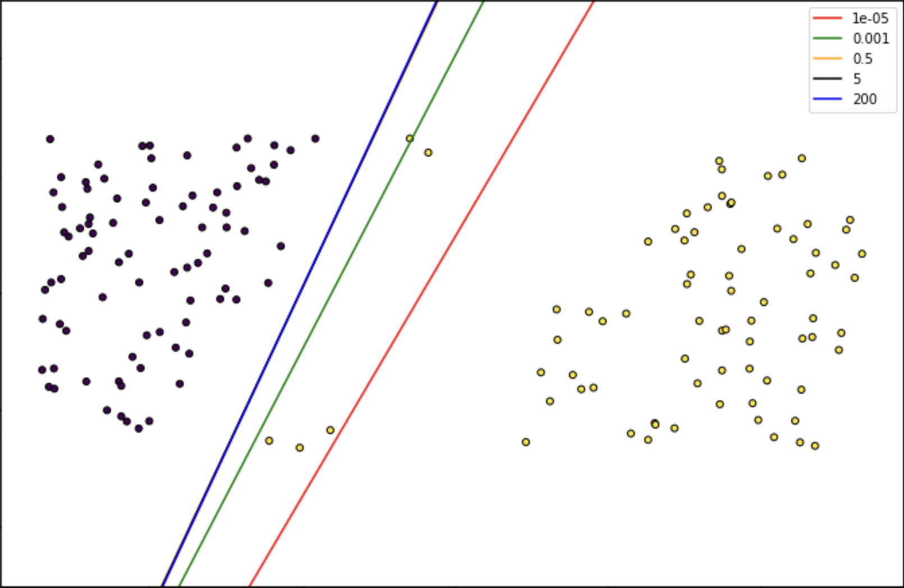
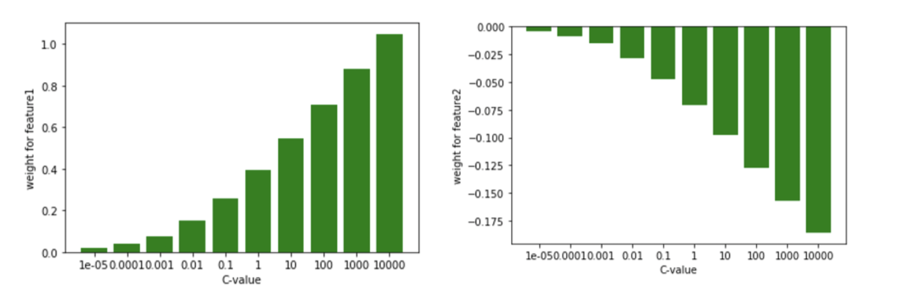

Summary - Logistic Regression Algorithm
Terminology
\(N\) - Number of data points
\(X_q\) - query data points
\(X_{qn}\) - nth query data point
\(X\) - input train data
\(D\) - dimensionality of data
\(C\) - Number of classes
\(C_i\) - i^th class
\(N_k\) - K nearst neighbors
\(m\) - Number of epochs in SGD
This blog was originally published in this link.
Algorithm
We have to optimize the log loss value. We can do this using the Gradient Descent. optimization problem is
\[\begin{align} \min_{W, b} \sum_{i=1}^N \log(e^{- y_i (X_i^T W + b)} + 1)\\ \text{ here } C = 2 \text{ and } y_i = +1 \text{ or } -1 \end{align}\]
once after optimization, we will get the W, b where loss \(L(W,b)\) is minimum. We can predict the class probability of a query point using W, b as below.
\[\begin{align} P(y=1 | X_{qn}, W, b) = \frac{1}{1+e^{-(WX_{qn}+b)}} \end{align}\]
We can re-write the above same loss formulation as below,
\[\begin{align} \min_{W_{1},W_{2}...W_{C}, b}- \frac{1}{N} \sum_{i=0}^{N-1} \sum_{C=0}^{C-1} y_{i,c} \log p_{i,c}\\ y_{i,c} = 1 \text{if sample i has label C taken from a set of C labels else 0} \\ p_{i,c} = \frac{1}{1+e^{-(W_{C}X_{i}+b)}} \end{align}\]
Once after calculating W vectors, we can get C probabilities using \(p_{i, c}\) and then classify the given query point as maximum probability class.
We can write the final formulation with regularization as below
\[\begin{align} \min_{W, b} C * \sum_{i=1}^N L(W,b) + \text{regularization term} \end{align}\]
\[\text{or}\]
\[\begin{align}
\min_{W, b} \sum_{i=1}^N L(W,b) + \lambda * \text{regularization term}
\end{align}\]
We can handle multi-class classification in 3 ways, 1. Using one-vs-rest approach and first formulation of loss 2. Using one-vs-one approach and first formulation of loss 3. Multinomial logistic regression - 2nd formulation of loss and softmax function in the place of sigmoid function to get C class probabilities.
Useful points to know
If we want to use logistic regression for multi-class classification, we have to use one-vs-rest/one-vs-one/multinomial.
Time complexity of training is \(O(mCND)\) and prediction is \(O(CD)\). Prediction time is very less so we can use logistic regression for low latency applications.
We can train the model using the iterative algorithm so there is no need to load total data into RAM (We can load chunk by chunk if we have huge data). We can use this model in online training too. Check the
partial_fitfunction insklearnimplementation.It assumes
- Observations should not come from repeated measurements.
- None or Little Multicollinearity
- The linearity of independent variables and Log odds - It requires features that are linearly related to the log-odds/logits, i.e \(log(\frac{P}{1-P})\)
We can parallelize the multi-class logistic regression using one-vs-rest in sklearn. If you want for binary classification, use data parallelization, and accumulate gradients.
It is a linear model, it cannot classify non-linear data. If you have non-linear data, do feature engineering and try to get linear data.
Higher dimensional data (not Huge) may lead to linear separable sometimes.
An increase in the feature value always leads to an increase or decrease in the target outcome(not probability, to logit/log-odds) so, it is a monotone model to log-odds/logits. Please check the interpretability below to know more about logit.
It won’t consider the interaction between the features. We have to create the interaction features if we need it. More interaction features may lead to less interpretability.
Hyperparameters
- C is the main hyperparameter we have (this is different from C classes we are using)
- High C value means less regularization strength.
- C is a multiplicative constant to loss term. While optimization we have to find the minimum value of the loss(Log loss+regularization). If we increase the C value, Log loss has to decrease so that final loss will decrease, i.e log loss will get very near to zero if C increases, so it may be overly certain about training data, so it overfits.
- The below image contains decision hyperplanes for each value of C. You can observe that increasing the C value is reducing the regularization and overfitting to the data.

- In the above figure, we are getting similar classification results for all C greater than 0.5 but, increasing the C value reduces the regularization strength and increases the magnitude of weight vector values. You can check that in the below figure.

- If two hyperplanes are giving similar results, get the best hyperplane based on the magnitude of weights. low weight is better because it gives more regularization and it won’t overestimate the probability value.
Important: Let’s take two planes. plane1 is 1.5f1 + 2.4f2 + 1 = 0, plane2 is 4.5f1 + 7.2f2 + 3 = 0. Both planes are mathematically same, only weight values are changed, but for a query point (0, 0), plane1 will give a probability of 0.73 and plane2 will give a probability of 0.95. But, the distance of the point (0,0) from both planes is the same that is 0.35 only. so large weights lead to overestimation of probabilities even though they are near to the plane.
Interpretability
From logistic regression prediction probability function, we can write
\[\begin{align} log\left(\frac{P(y=1)}{1-P(y=1)}\right)=log\left(\frac{P(y=1)}{P(y=0)}\right)=W_{0}+W_{1}x_{1}+\ldots+W_{d}x_{d} \end{align}\]
\[\begin{align} odds = \left(\frac{P(y=1)}{1-P(y=1)}\right)=\left(\frac{P(y=1)}{P(y=0)}\right)=e^{W_{0}+W_{1}x_{1}+\ldots+W_{d}x_{d}} \end{align}\]
If odds = 3 then \(P(y=1)\) is thrice as high as \(P(y=0)\)
If the feature \(x_{j}\) is changed by n unit and the ratio of odds after the change and before the change is
\[\begin{align} \frac{odds_{x_j+n}}{odds}=\frac{e^{\left(W_{0}+W{1}x_{1}+\ldots+W_{j}(x_{j}+n)+\ldots+W_{d}x_{d}\right)}}{e^{\left(W_{0}+W_{1}x_{1}+\ldots+W_{j}x_{j}+\ldots+W_{d}x_{d}\right)}} \end{align}\]
\[\begin{align} \frac{odds_{x_j+1}}{odds}=e^{\left(W_{j}(x_{j}+n)-W_{j}x_{j}\right)}=e^{\left(nW_j\right)} \end{align}\]
If we increase the feature \(x_{j}\) by n unit, the odds change by factor of \(e^{nW_j}\)
We can interpret the odds. If odds = k, \(P(y=1) = k*P(y=0)\)
References
- https://stackexchange.com/
- An Introduction to Statistical Learning - Book
- https://www.jeremyjordan.me/content/images/2017/06/Screen-Shot-2017-06-10-at-9.41.25-AM.png